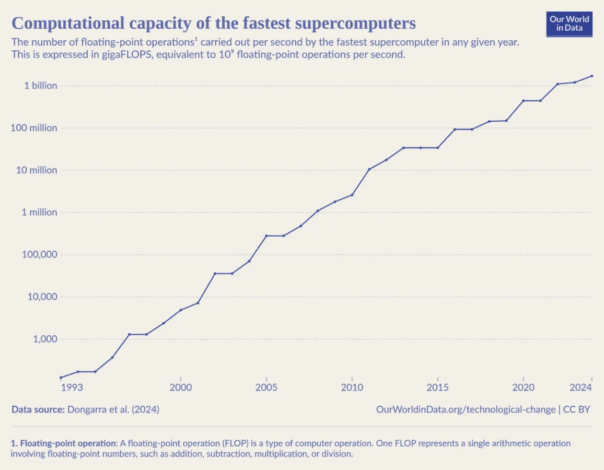

As 2025 begins, a new buzzword is making headlines: ‘quantum’. Maybe you saw a news article about Google’s new ‘mind-boggling’ Willow quantum chip? Or vaguely recall Justin Trudeau’s viral video explaining quantum quantum computing? Or perhaps it was a list of deep tech companies of the future? In any case, the United Nations has declared 2025 the International Year of Quantum Science and Technology. So, does any of this matter for your organization?
What is Quantum?
Simply put, quantum mechanics is the theory describing the fundamental physics of small things like atoms and molecules. While this theory is now over 100 years old, its first applications only started to become apparent in the mid-20th century with the development of technologies like the semiconductor microprocessor (and the dawn of modern computing) and the laser. Yet, these transformational technologies relied on the bulk properties of many atoms. The recent excitement over quantum technology is its potential to control individual atoms (or artificial replicas), allowing the counter intuitive weirdness of quantum theory to be harnessed and applied.
In many cases, quantum developments will result in fairly incremental technological advances – better clocks, accelerometers, and magnetometers. However, the genuinely exciting technology that has everyone talking is the potentially transformational power of quantum computing. A normal (classical) computer is limited to do one calculation (eg. multiplying two numbers) at a time. To achieve faster speeds, we must either increase how often a calculation is performed – something which has already nearly reached its physical limits – or bundle many small processors together that work on different parts of a problem simultaneously (the principle behind GPUs, which are so critical to recent AI advances).
A quantum computer, however, has the ability to operate entirely differently. Through employing quantum superposition – where a particle can effectively exist in multiple places at once until it is observed – quantum computers can, for some calculations, perform every possible calculation simultaneously and then select the correct solution in the same time it would take a normal computer to perform a single calculation.

OurWorldinData.org/technological-change | CC BY
Data source: Dongarra et al. (2024)
The Potential of Quantum Computing
For anyone who has been watching the stock price of Nvidia over the last year, the importance of computing power should be obvious. Our modern economy and society relies on computational power to do everything – from giving you a search result, finding the fastest route to work, or using AI to describe the contents of an image. The ability to do this faster would be immensely valuable.
Unfortunately, quantum computing is almost certainly less revolutionary than this outline suggests. The words ‘for some calculations’ in the previous paragraph were doing a lot of heavy lifting. At present, we really only know of one useful calculation where quantum computers are definitely superior to their classical counterparts: factorizing numbers into products of their primes (eg. 20=2x2x5). Whilst this may seem underwhelming, it is certainly not. The simple fact that classical computers find this problem so difficult underpins the entire cryptographic system we use to keep our information secure. This would mean an advanced quantum computer could break almost all the encryption we use today.
Beyond this, quantum computers are expected to have additional applications. Early efforts have focused on areas such as industrial chemistry, material development, drug discovery, and routing optimization. More uses are likely to emerge once a fully functional quantum computer becomes a reality – but that is likely still at least 5 to 15 years away. For instance, IBM’s roadmap predicts a useful quantum computer in the early 2030s.
Security Guaranteed by the Laws of Physics
Another quantum technology that receives substantial attention is quantum communication. This technique makes use of the laws of physics to ensure that a message has not been intercepted, thus ensuring only the intended recipient ever receives a copy to read. In principle, this could avoid the need to use any kind of encryption to send messages securely. However, implementing quantum communication is much more complicated than current encryption techniques, requiring specialized hardware. As a result, it is likely only ever to be applicable for communications that need the highest security.
The Impact on Business
So does any of this matter? If you sell advanced sensors, design processors and chips, run a telecommunications company, or are involved in fundamental research of new materials, then the answer is unequivocally: yes. But for everyone else, the matter is a little more nuanced.
The most immediate reason to care is if you have data that must remain secure for 10+ years. If that is the case, anything transmitted over the internet using current encryption standards will be susceptible to a ‘collect and decrypt’ attack – where all the encrypted communications can be collected and stored today, and decrypted once a sufficiently powerful quantum computer becomes available. The good news is that solutions to this problem exist. Post-quantum encryptions schemes are already available, and whilst largely untested and possibly vulnerable, they can be used in conjunction with current encryption standards. For information that must remain absolutely confidential, investigating how quantum communication could benefit your organization would be beneficial. However, for the vast majority of organizations, post-quantum encryption is likely to be implemented as an industry standard well before an attack from a quantum computer is viable. And as today, the biggest vulnerability is likely to still be malware and phishing attacks even after we reach the age of quantum computing.
It is also likely that the transformational power of quantum computers will be valuable to your organization – in a similar way to how GPUs revolutionised AI tools. However, unless you're a major cloud computing provider, a quantum computer won't be showing up on your purchase orders any time soon. The first quantum computers will be enormous, comparable in scale to today’s data centers, and almost certainly will be accessed through the cloud.
So, what’s the bottom line? Do you need to take immediate action on quantum technologies? Almost certainly not. However, an audit of all your organization’s data would be valuable – both to determine which information needs long-term security (and thus post-quantum encryption) and, perhaps more importantly, to understand how data is currently collected and stored, with an eye toward using it for custom AI tools.